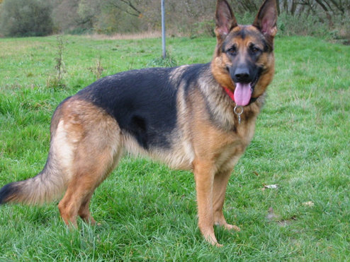

გერმანული ნაგაზი (გერმ. Deutscher Schäferhund) — ძაღლის ჯიში, რომელიც გამოყვანილია გერმანიაში XIX საუკუნეში. დღევანდელი სახით გერმანული ნაგაზი გამოიყვანა მაქს ფონ შტეფანიცმა XIX საუკუნის ბოლოს. ვიურტემბერგის, ტიურინგის და ბავარიის მეცხვარე ძაღლების შეჯვარებით ფონ შტეფანიცმა მიიღო ლამაზი, ფხიზელი, დამჯერი გერმანული ნაგაზი. 1915 წლამდე გამოფენებზე გამოჰყავდათ როგორც გრძელბალნიანი, ასევე მოკლებალნიანი ნაგაზები. დღესდღეობით უმეტეს ქვეყანაში გამოფენაზე დაიშვება მხოლოდ მოკლებალნიანი ნაგაზი. მნიშვნელობა აქვს ბალნის შეფერილობასაც. გამოფენაზე დაიშვება შავი-წითური, შავი-ნაცრისფრით და შავი შეფერილობის ძაღლები. ზოგიერთ ქვეყანაში აკრძალულია ყვითელი და კრემისფერი სახესხვაობები. ჯერ კიდევ ისტორიკოსი ტაციტი წერდა "მგლის მსგავს ძაღლზე რეინის მიმდებარე მიწებიდან". სრულებით შესაძლებელია, რომ გერმანული ნაგაზი და მისი ახლომონათესავე ჰოლანდიური და ბელგიური ნაგაზები დღევანდელი სახით ჯერ კიდევ ათასი წლის წინ არსებობდნენ. პირველი მსოფლიო ომის დასაწყისისთვის გერმანული ნაგაზი ძალიან პოპულარული გახდა გერმანიაში და მალე მთელ მსოფლიოში გავრცელდა. უწესრიგო შეჯვარებამ გამოიწვია ფიზიკურ ჯანმრთელობასთან და ყოფაქცევასთან დაკავშირებული პრობლემები. ძალიან ხშირია ართრიტები, თვალის, კუჭ-ნაწლავის დაავადებები და სხვა. ხშირად ვლინდება ნევროზულობა, სიმხდალე, ან აგრესია სხვა ძაღლების მიმართ. გერმანული ნაგაზის თავი საკმაოდ ვიწროა, ყურებს შორის მანძილი პატარაა, ნუშისებრი თვალები შედარებით ღრმადაა განლაგებული, კუდი გრძელი ბეწვითაა დაფარული, კისერი საშუალო სიგრძისაა კარგად განვითარებული კუნთებით. მშვიდ მდგომარეობაშიც კი ძაღლს ყურადღება გამახვილებული აქვს და ენერგიითაა სავსე. გერმანული ნაგაზი კარგად ეგუება ქალაქში ცხოვრებას, ასევე კარგად გრძნობს თავს ცივ კლიმატში, ადვილია მისი გაწვრთნა, კარგი მოდარაჯეა, სჭირდება დამატებითი ფიზიკური დატვირთვა.
